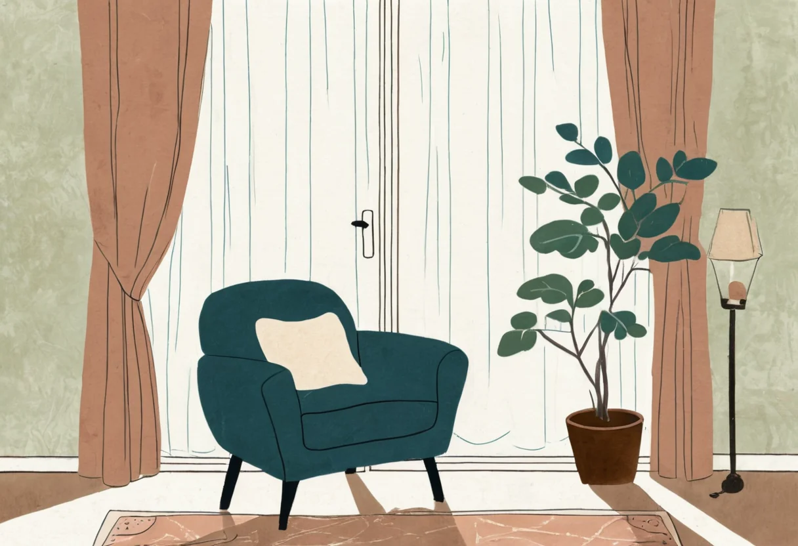
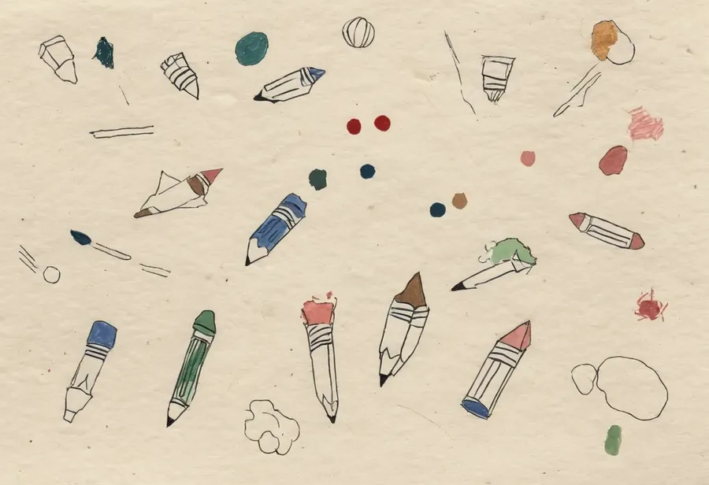
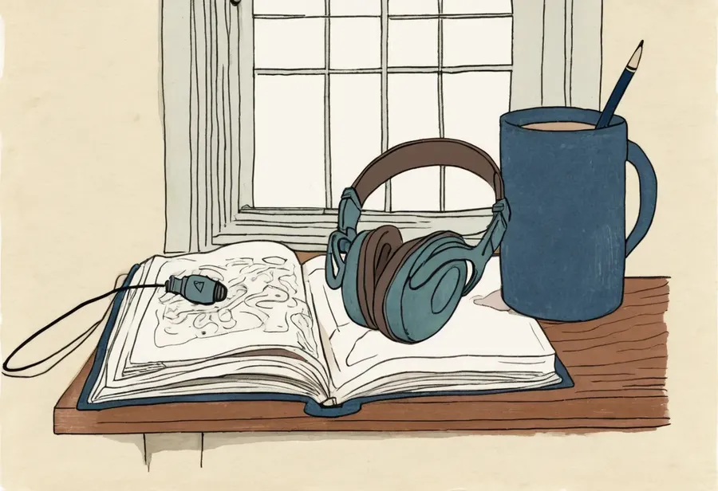
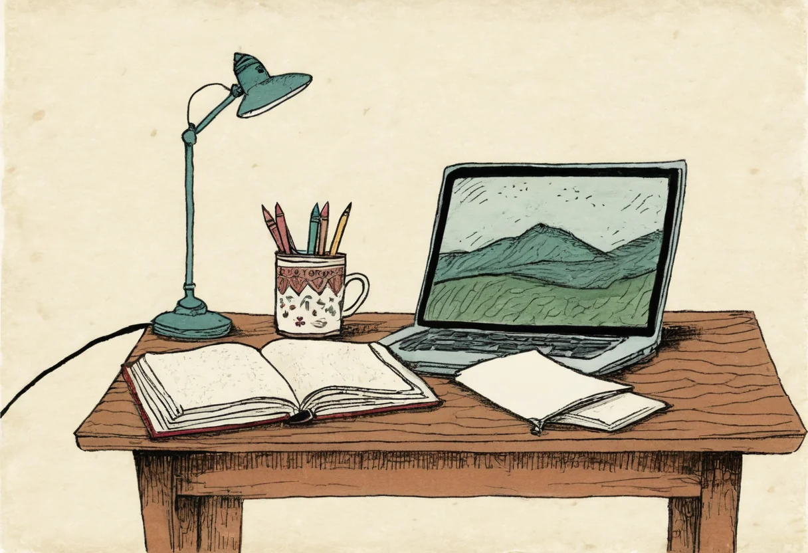
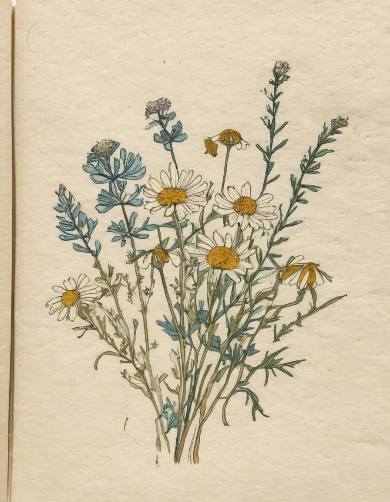

( психолог-психоаналитик )
Софья Канина
Помогаю взрослым, подросткам и детям с 7 лет разобраться, что мешает жить так, как хочется. Без быстрых советов и готовых техник: вместе ищем, откуда берётся тревога и почему повторяются одни и те же истории.
- Очно и онлайн
- 50 минут
- 4 000 ₽


( обо мне )
Меня зовут Софья. Я психолог-психоаналитик
Для меня важно не «чинить» человека, а вместе с ним исследовать то, что мешает ему жить так, как он хочет.
Психоанализ — это не быстрый совет и не готовая техника, а совместная работа, в которой рождается понимание себя.
- Высшее профильное образование уточнить: вуз и год
- Опыт работы больше 3 лет уточнить: с какого года
- Прохожу личную терапию и супервизию
- В работе с детьми использую арт-терапию и песочную терапию
- Веду долгосрочные групповые и индивидуальные занятия


( кому я помогаю )
С чем можно ко мне обратиться


( взрослым )
Вам ко мне, если стало трудно
Кто-то годами живёт с тревогой и не понимает, откуда она. Кто-то повторяет одни и те же отношения, которые заканчиваются одинаково. Кто-то чувствует, что потерял себя.
Я не обещаю мгновенных изменений, но предлагаю пространство, где можно остановиться, выдохнуть и начать понимать, что с вами происходит.

- Тревога, страхи, внутреннее напряжение
- Сложности в отношениях: с близкими, партнёрами, коллегами
- Повторяющиеся сценарии, которые не дают двигаться дальше
- Чувство «не на своём месте», потеря смысла
- Самооценка, внутренний критик, чувство вины
- Переживание кризисов и жизненных перемен
Мы работаем со всем, что вы принесёте в кабинет, в том числе с тем, что трудно назвать словами. уточнить у Софьи: фраза про трансгендерных клиентов (вопрос 1 в плане)
Первая встреча
С первой встречи знакомства. Мы говорим о том, что вас привело, что вас беспокоит, чего вы ждёте от работы. Это не допрос и не тест — это разговор, в котором я помогаю вам сформулировать запрос и понять, подходит ли вам мой подход. По итогам первой встречи мы вместе решаем, продолжаем ли работу и в каком формате.
Что происходит на встрече
Вы говорите о том, что для вас важно: о своих чувствах, мыслях, отношениях, снах, воспоминаниях. Я слушаю, задаю вопросы, помогаю замечать то, что может оставаться незамеченным. Это совместное исследование: мы вместе постепенно понимаем, откуда берутся ваши трудности и как они связаны с вашей историей.
Сколько длится работа
Это зависит от запроса и от вашей истории. Психоаналитическая работа — не короткая консультация и не пять шагов к счастью. Это исследование, которое требует времени. Я не обещаю конкретных сроков, но мы регулярно обсуждаем динамику. Вы в любой момент можете обсудить со мной, как идёт работа, и скорректировать её.
( родителям и детям )
Ребёнок капризничает, замкнулся или не хочет в школу?
Дети не всегда могут сказать словами, что их тревожит. Иногда они «ведут себя не так»: капризничают, замыкаются, боятся, дерутся, отказываются идти в школу. За этим почти всегда стоит что-то важное, что ребёнок пока не умеет выразить иначе.
Я работаю с детьми с 7 лет и подростками через игру, творчество и разговор. И работаю в связке с родителями, потому что изменения происходят не только в кабинете, но и дома.


- Тревожность, страхи, ночные кошмары
- Трудности адаптации: к школе, новым условиям, переезду
- Замкнутость, сложности в общении со сверстниками
- Агрессивность, капризы, «непослушание», за которыми стоит что-то большее
- Семейные изменения: развод родителей, появление младшего ребёнка, потеря близкого
- Трудности в школе: неуспеваемость, отказ учиться, конфликты с учителями
- Травматичные события, горе, потеря
- Подростковые кризисы, вопросы самооценки и идентичности
- Если кажется, что с ребёнком «что-то не так», но не получается сформулировать что
Встреча с родителями
Обсуждаем, что происходит с ребёнком и что вас беспокоит. С малышами первая встреча часто проходит вместе с родителем: так ребёнку спокойнее.
Занятия с ребёнком
Игра, рисунок, лепка, сказка, разговор — естественный для ребёнка язык. С подростками — разговор, бережно и с уважением к их границам.
Регулярные встречи с вами
Обсуждаем, как меняется состояние ребёнка и что можно сделать дома. Родители не «сбоку» от процесса, а его важная часть.
Сколько нужно встреч
Это зависит от запроса и от ребёнка. Иногда достаточно нескольких встреч, чтобы стало легче, иногда нужна более длительная работа. Я не обещаю «избавить за три сессии», но мы регулярно обсуждаем динамику и вместе решаем, как двигаться дальше.
( подросткам )
Если тебе от 12 до 18 лет
Я не буду тебя воспитывать и оценивать. Моя задача — помочь тебе разобраться в том, что ты чувствуешь, и найти способы с этим справляться.

С чем ко мне приходят подростки
- Тревога, страхи, ощущение, что «что-то не так»
- Отношения с родителями: конфликты, непонимание, чувство, что тебя не слышат
- Отношения со сверстниками: дружба, влюблённость, конфликты, травля
- Суицидальные мысли и намерения, самоповреждающее поведение
- Самооценка: «я недостаточно хорош», сравнение с другими
- Депрессивные эпизоды разной степени тяжести
- Вопросы о себе: кто я, чего я хочу, куда двигаться
- Расстройства пищевого поведения
- Трудности в школе, давление, усталость
- Переживания, которыми трудно поделиться с близкими
Как это происходит
Мы просто разговариваем. Ты можешь говорить о том, о чём хочешь, или молчать, если не готов. Я не буду заставлять тебя говорить «по плану» и не буду передавать родителям то, что ты рассказываешь, кроме ситуаций, когда речь идёт о твоей безопасности. Это важно, и я говорю об этом честно с самого начала.
Всё, что происходит на наших встречах, конфиденциально.
Что важно знать
- Тебе не нужно быть «готовым» или «формулировать проблему». Можно прийти просто с ощущением «мне плохо», и мы начнём с этого.
- Ты можешь сказать «я не хочу об этом говорить», и это будет уважаться.
- Если тебе не понравится со мной работать — это нормально, можно сказать об этом. Я не обижусь.
Если ты читаешь это и чувствуешь, что тебе нужна поддержка, скажи об этом родителям или напиши мне. Первый шаг всегда самый трудный, но ты не один.
Позвони на детский телефон доверия. Это бесплатно, анонимно и круглосуточно.
8-800-2000-122сверить номер на официальном сайте и согласовать с Софьей
( форматы и стоимость )
В каких форматах со мной можно поработать
Встреча длится 50 минут. Как правило, раз в неделю в одно и то же время. Онлайн тоже можно: важно только тихое пространство, где вас никто не прерывает, и стабильная связь.
- Индивидуальная консультация50 минут, очно4 000 ₽

Онлайн-консультация50 минут, по видеосвязи4 000 ₽ Парная консультация90 минут7 000 ₽
Парная консультация90 минут7 000 ₽- Встреча с ребёнком или родителямиуточнить цену и длительность—
Оплата
уточнить: способы оплаты и когда оплачивать
Отмена и перенос
уточнить: за сколько часов можно бесплатно отменить или перенести встречу
( вопросы )
Частые вопросы
Это конфиденциально?
Да. Всё, что происходит на наших встречах, остаётся между нами. Если у вас есть вопросы о конфиденциальности, мы можем обсудить их на первой встрече.
А если я не знаю, о чём говорить?
Нет. Не нужно готовить темы, правильные вопросы или отчёты. Можно приходить с тем, что есть: с усталостью, с пустотой, с раздражением, с желанием помолчать. Всё это материал для работы.
Это очень частая ситуация, и она не проблема. Молчание, ощущение пустоты — тоже часть процесса, и мы можем исследовать это вместе. Вам не нужно быть хорошим клиентом и развлекать меня. Достаточно быть собой.
Вы проходите личную терапию и супервизию?
Да, личная терапия и супервизия помогают мне сохранять ясность и не привносить в работу с вами свои собственные слепые пятна.
С какого возраста вы работаете?
С 7 лет и старше, включая подростков. С детьми старшего дошкольного возраста — по вопросам дезадаптации, по договорённости с родителем, зачастую разово, а основная работа проходит со взрослым.
Нужно ли мне присутствовать на встрече ребёнка?
С детьми младшего возраста первая встреча часто проходит вместе с родителем, так ребёнку спокойнее. Дальше, как правило, мы работаем один на один, а с вами встречаемся отдельно. С подростками важно пространство наедине — это часть уважения к их автономии.
Вы мне расскажете всё, что говорит ребёнок?
Я трепетно отношусь к доверию ребёнка — это условие того, чтобы работа была возможна. Я расскажу вам о том, что важно для безопасности и благополучия ребёнка, и о том, как меняется его состояние. Но личные переживания, которыми ребёнок делится со мной, остаются его пространством. При этом мы регулярно встречаемся с вами и обсуждаем всё, что важно для процесса.
Ребёнок не хочет идти. Как ему объяснить?
Скажите просто и честно, без пугающих формулировок. Например: «Есть взрослая, с которой можно поговорить о том, что тебя беспокоит. Ей можно рассказать про школу, про друзей, про то, что тебе грустно или страшно. Она не будет тебя ругать». Не нужно говорить «тебя там полечат» или «тебя научат себя вести» — это создаёт ощущение, что с ребёнком «что-то не так».
Это нормально: новое место и новый взрослый вызывают тревогу. Не заставляйте и не давите. Можно предложить: «Давай сходим один раз, просто посмотрим. Если не понравится, не будем ходить». Часто достаточно одного визита, чтобы тревога снизилась и ребёнок в дальнейшем шёл на встречи с удовольствием. Если сопротивление сильное, мы можем сначала встретиться с вами без ребёнка и вместе подумать, как сделать первый шаг мягче.
( образование )
Учусь и развиваюсь
уточнить: список дипломов и курсов текстом — названия, вузы, годы



( запись )
Чтобы записаться, напишите мне в Telegram
Коротко расскажите, что вас беспокоит, и мы договоримся о времени первой встречи. уточнить: город и адрес для очных встреч